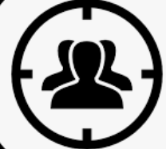
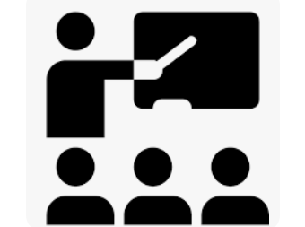

Cours :
Culture Entrepreneuriale Management De Projet Et Séminaires Professionnels
10 documents :
La session se concentre sur le développement des compétences entrepreneuriales et de gestion de projet.
 Public cible :
Pour les étudiants qui recherchent une compréhension pratique des concepts de base de l'entrepreneuriat et de la gestion de projet.
 Méthode d'enseignement :
La session comprend des présentations, des discussions interactives et des études de cas réels pour améliorer la compréhension et l'application des compétences dans des scénarios réels.
 réalise par : Ilyasse Daoudi
réalise par : Ilyasse Daoudi